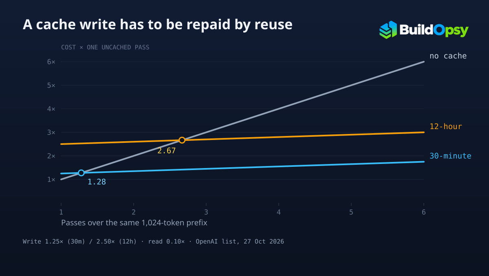

1. The Switch Is On, and the Bill Is a Choice
OpenAI's documentation states that prompt caching is enabled by default for supported models, which means the decision you actually make is not whether to cache but how long to keep the cache alive and where the prefix boundaries fall. That distinction matters because the two lifetimes are priced very differently at write time: 1.25× ordinary input for the default 30-minute lifetime, and 2.50× for the 12-hour minimum lifetime available in the Responses API. Reads then cost 0.10× ordinary input on most of these models, and 0.05× on GPT-6.1 Sol and GPT-6.1 Terra, regardless of the lifetime you selected.
Read those numbers as a payment structure rather than a discount table. You pay more than list price to place a prefix in cache. You pay far less than list price each time you use it. The question worth answering before you touch a TTL is therefore not "how big is the discount" but "how many times does this prefix get reused before it stops being useful," because that count decides whether the prepayment clears.
2. Three Rates, Not Two
The most common modelling error is treating cache writes as an additive fee on top of an ordinary input charge. They are not. OpenAI's pricing guidance is explicit that cache-write pricing is not additive: an input token is billed at exactly one of three rates, the uncached input rate, the cached-input rate, or the cache-write rate. A teardown that bills input and then adds a write premium on top will overstate the cost of caching and can flip the conclusion.
It follows that the whole comparison reduces to two numbers per model, a write multiplier and a read multiplier. Both are ratios against the same base price, which is why the per-million-token figures change between models but the break-even reuse count barely does. Using published list prices from October 27, 2026:
| Model | Input | Cached read | 30m write | 12h write | Break-even 30m | Break-even 12h |
|---|---|---|---|---|---|---|
| gpt-6.1-sol | $2.00 | $0.10 | $2.50 | $5.00 | 1.26 passes | 2.58 passes |
| gpt-6.1-terra | $1.00 | $0.05 | $1.25 | $2.50 | 1.26 passes | 2.58 passes |
| gpt-6-luna | $0.10 | $0.01 | $0.125 | $0.25 | 1.28 passes | 2.67 passes |
| gpt-6-astra | $10.00 | $1.00 | $12.50 | $25.00 | 1.28 passes | 2.67 passes |
Dollars per million tokens, published list prices retrieved October 27, 2026. Break-even columns are Buildopsy arithmetic from the multipliers in the same row, not vendor-published figures. The two clusters exist because the read rate is 0.05× on Sol and Terra and 0.10× on the other two.
One exception changes the advice for older deployments. On GPT-5.5 and earlier the pricing page leaves both write columns as a dash, and the model-difference summary lists the cache write charge for those models as none beyond the ordinary input rate. Where a write costs exactly what an uncached pass costs, the break-even collapses to a single pass, and the TTL decision stops being a bet on reuse: caching is simply cheaper the moment it hits once. The two- and three-pass thresholds below describe the GPT-5.6-and-later pricing structure, not the whole catalogue.

3. The 1,024-Token Floor Comes First
Before any of this matters, the prefix has to be long enough to be cached. OpenAI documents a minimum cacheable prompt length of 1,024 tokens for GPT-5.6 and later, with the threshold varying by request settings on earlier models, and states that tokens in the provider-supplied hidden system content do not count toward that minimum. A short developer instruction block with tool definitions underneath it can therefore sit under the floor, in which case the cached rate never applies however the TTL is set.
This is where a naive per-call calculation goes wrong in the other direction. If the reusable part of your prompt is 700 tokens and the rest is per-request, caching contributes nothing and the arithmetic above is moot. If it is 4,000 tokens, the prepayment is large in absolute terms and the reuse count becomes the only lever that matters. The floor is a precondition, not a discount tier.
4. Break-Even Is a Count, Not a Percentage
Write the comparison directly. Let w be the write multiplier and r the read multiplier, both against ordinary input price, and let n be the number of passes over the same prefix, counting the write as the first. Caching costs w + r(n - 1). Not caching costs n. Setting them equal and solving gives the break-even count:
With w = 1.25 and r = 0.10, that is (1.25 − 0.10) / 0.90 = 1.28 passes. With w = 2.50 and the same read rate, it is (2.50 − 0.10) / 0.90 = 2.67. The formula is worth checking against the vendor's own worked example: OpenAI states that at the 0.10× read rate with 30-minute writes, writing a prefix once and fully reusing it once costs 1.35× its ordinary input cost, against 2× for processing it twice without caching. Our expression reproduces that exactly, since 1.25 + 0.10 = 1.35.
The practical reading is blunt. On the short lifetime, caching wins on the second pass. On the long lifetime, one reuse is not enough: at two passes the 12-hour cache costs 2.60× its ordinary input rate against an uncached 2.00× at the 0.10× read rate, and 2.55× at the 0.05× read rate. It only pulls ahead at the third pass either way. Any workload that reads a prefix once after the write and then moves on is paying a premium for the long TTL and taking a loss on it.
5. The 12-Hour Write Is a Different Bet
It is tempting to treat the longer lifetime as strictly better, since it protects the cache through gaps that would evict a 30-minute entry. The pricing says otherwise: it is a different wager with a higher stake. Doubling the write multiplier moves the break-even from the second pass to the third, and the third pass has to be a real one, at full prefix size, inside the retention window.
That reframes the TTL question into something an engineer can actually test. The 30-minute lifetime is correct when reuse is dense and local, such as a multi-turn conversation or a burst of requests sharing a system prompt. The 12-hour lifetime is defensible when a stable prefix is genuinely revisited across hours, and the number to check is not "is the prefix stable" but "does this prefix get read at least twice after the write inside twelve hours." OpenAI's own guidance points the same way, recommending the default for frequently reused context and the 12-hour setting for stable prefixes reused across longer gaps, while warning that the higher write rate must be compared against the cost of rewriting after 30-minute coverage expires.
Whether most production workloads clear three passes is a separate empirical question, and I have no traffic data that would answer it. Treat the claim that long TTLs are usually wasted as a hypothesis to test against your own cache-read counters, not as a finding of this article.
6. What This Arithmetic Does Not Tell You
Four limits belong next to the numbers. First, the model assumes full-size reuse: a partial hit that reads only part of the cached prefix does not deliver the full 0.90× saving, and the formula will overstate the benefit. Second, it counts input tokens only; cached reads leave output pricing untouched, so a workload dominated by output tokens will see a smaller proportional saving than the input arithmetic implies.
Third, expiry is a real cost. A prefix rewritten after the window closes pays the write multiplier again, so a 12-hour cache used once per day behaves less like a cache and more like a subscription. Fourth, the multipliers here are OpenAI's published rates for these models on this date. Anthropic documents its own caching with 5-minute and 1-hour lifetimes and its own multipliers, and the break-even formula transfers while the numbers do not. Verify the rate for your model before applying a conclusion drawn from another vendor's table.
7. The One Number to Instrument
Everything above collapses into a single measurement, but the units have to match the formula. Recall that n counts the write as the first pass, so a counter that reports reads per write is reporting n − 1. Against that counter the thresholds are 0.28 reads per write for a 30-minute TTL and 1.67 for a 12-hour TTL at the 0.10× read rate, or 0.26 and 1.58 at 0.05×. Comparing reads-per-write against 1.28 would wrongly reject a 30-minute prefix that is read once per write, which the arithmetic above says is profitable.
The dashboards do not hand you that ratio directly. OpenAI documents a token cache-hit rate, computed as total cached tokens divided by total input tokens, alongside the cached-token and cache-write token counts in the response usage object. A token hit rate is not reads per write: it says what share of input tokens came from cache, not how many reads followed each write. Derive the count from request-level usage, or run the inequality directly on token volumes, and use cache_write_tokens_details to separate 30-minute from 12-hour writes when both lifetimes are in play. For the per-task version of this bill, including the price cut that moved cache reads further than list prices, see the Opus 5.5 cache-hit teardown. To convert the token rates into a monthly figure, the LLM Token Cost Calculator prices a turn from input and output volumes and a cache hit rate, which is the right tool once the TTL decision is made; it does not model the write premium or the pass count, which is the gap this article fills. The rest of the cost calculators cover the surrounding infrastructure. The distinction this article adds is narrow and deliberate: the previous pieces price a task, this one prices the decision about how long to keep a prefix alive.
Sources and Method
Rates and mechanics come from OpenAI's prompt caching guide and API pricing page, both retrieved October 27, 2026: the 1.25× and 2.50× write multipliers, the 0.10× and 0.05× read rates, the statement that cache-write pricing is not additive, the 1,024-token minimum for GPT-5.6 and later, the exclusion of hidden system content from that minimum, and the 1.35×-versus-2× worked example. Anthropic's prompt caching documentation was retrieved the same day for the existence and shape of its 5-minute and 1-hour lifetimes; no Anthropic multiplier is quoted here because none was verified for the models in scope.
The break-even counts, the two-pass and three-pass comparisons, and the table's final two columns are Buildopsy arithmetic on those published multipliers, computed as n* = (w − r) / (1 − r). They are modelled figures, not vendor-reported results, and they assume a prefix written once at full size, read at full size, with no partial hits and no rewrite after expiry. Every dollar figure is a per-million-token list price, not an observed invoice. No claim is made here about how often real workloads clear the break-even thresholds; that requires your own cache-read telemetry.